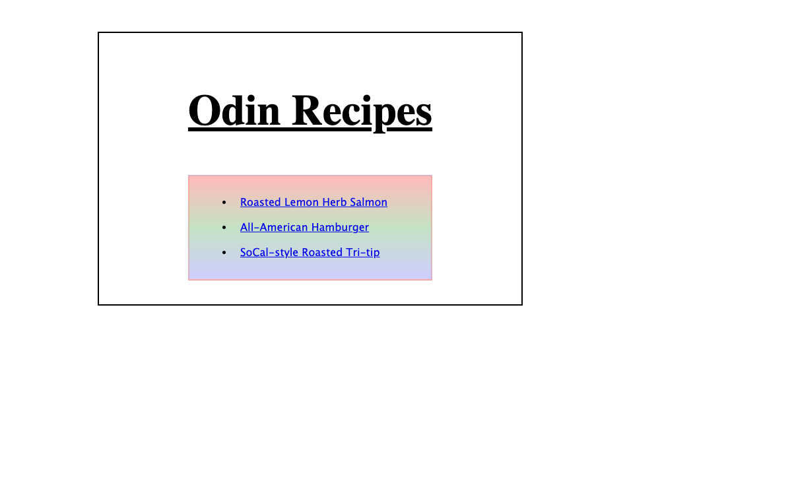
01A COLLECTION BY ANDREW MALVANI
Small projects.
A long way forward.
Every developer starts somewhere. These are the projects I built while learning web development with The Odin Project, collected here to look back on the process.
Explore the collection12 projects & exercise collections
11 demos to explore
Original code. Original history.
A record of learning, one project at a time.
FROM FIRST STEPS TO SMALL APPS
The collection
HTML and CSS foundations, interactive games,
new tools, and a first introduction to React.
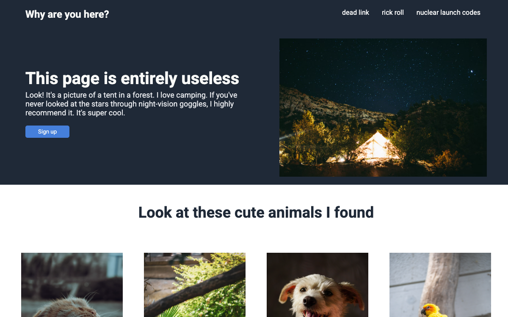
02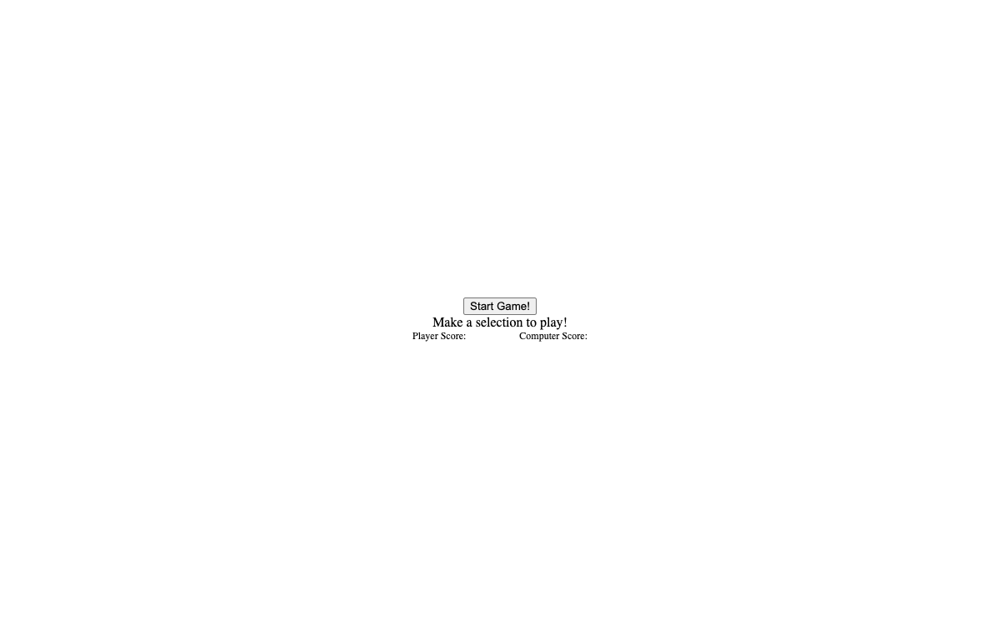
03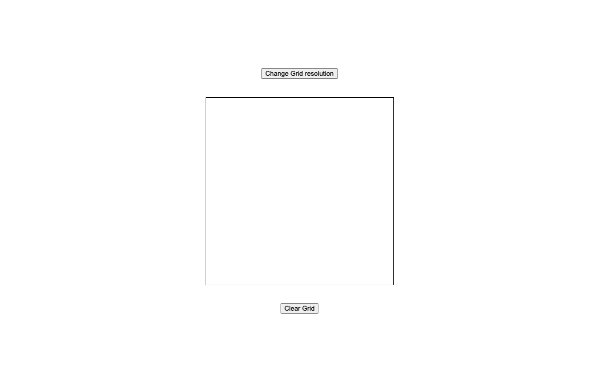
04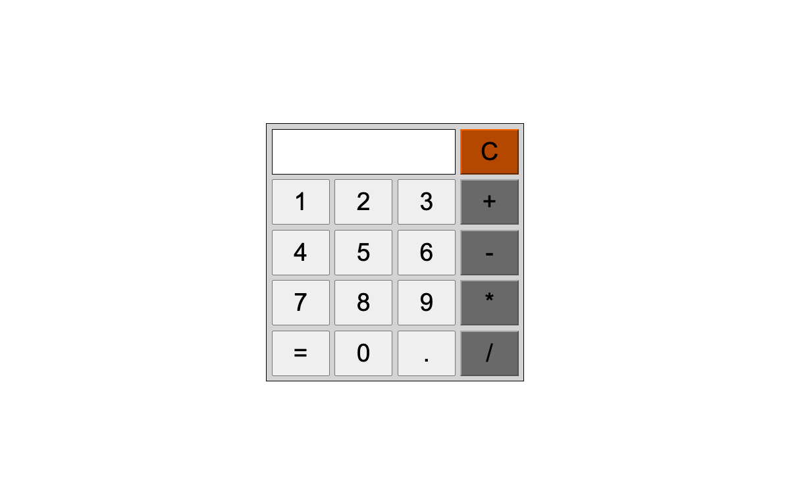
05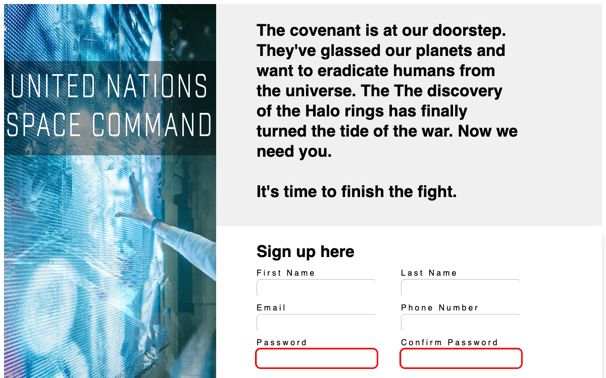
06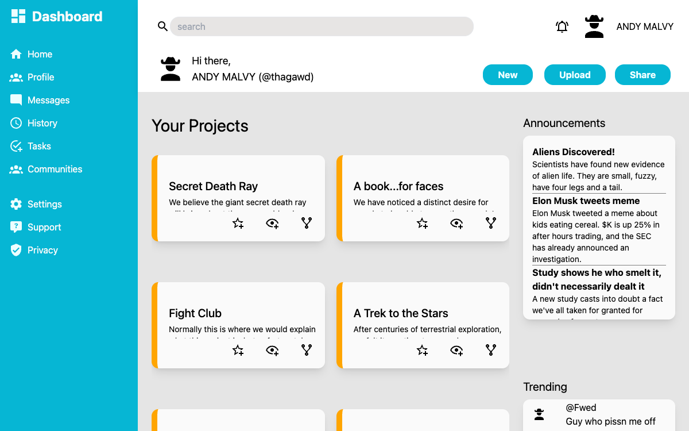
07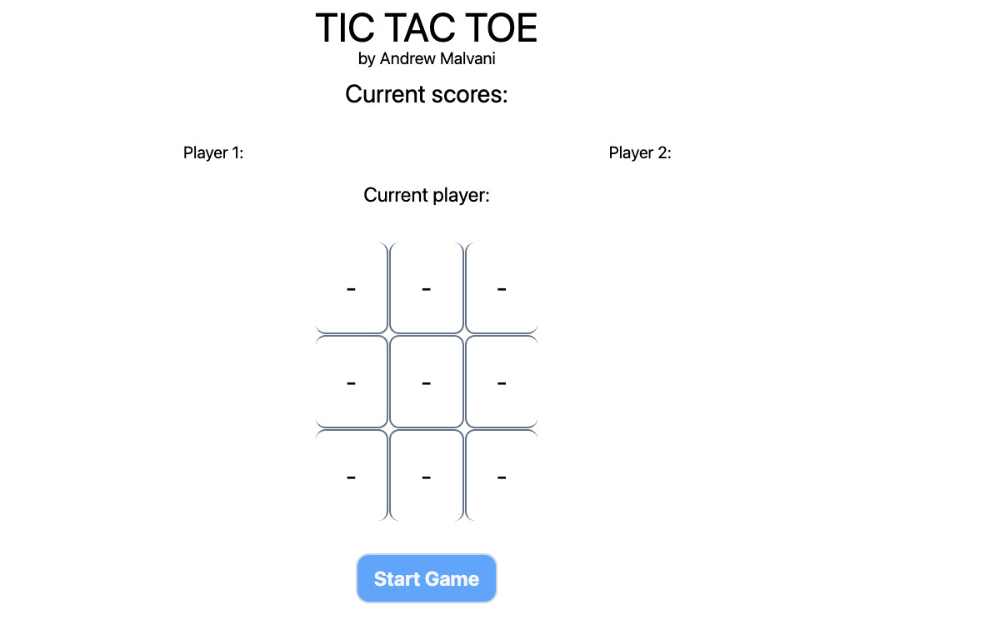
08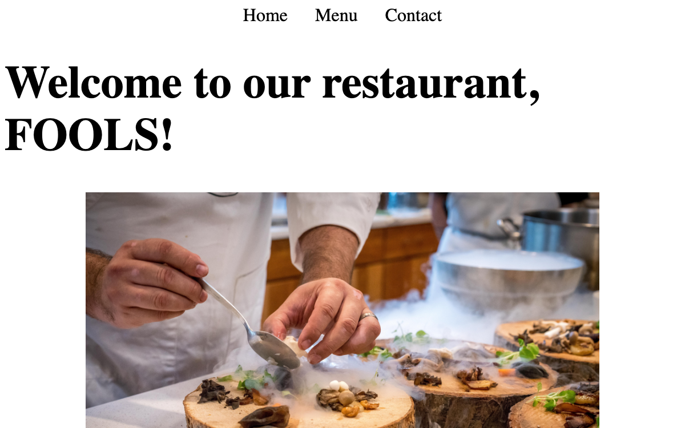
09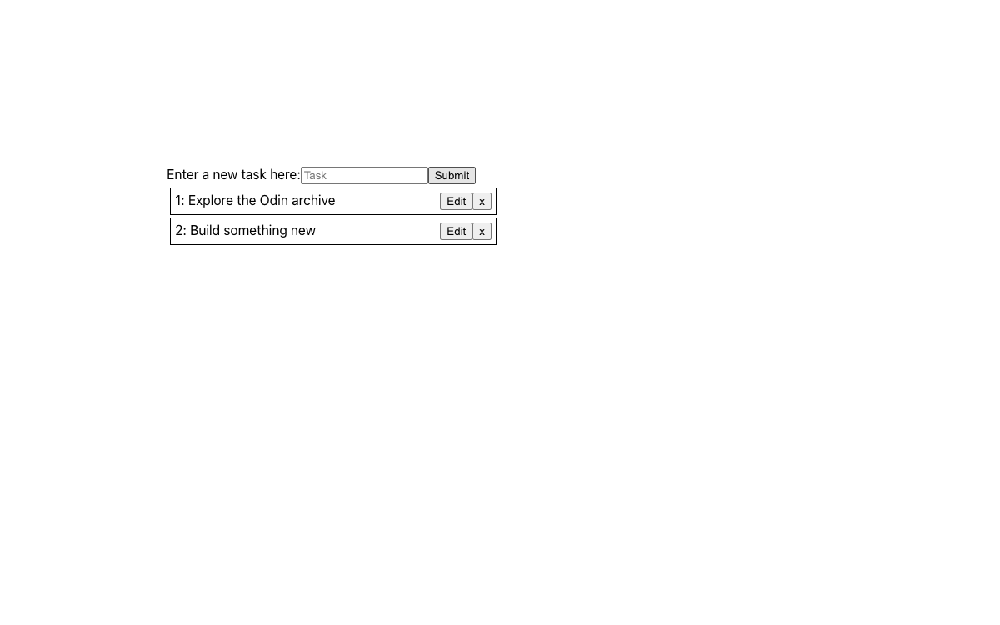
10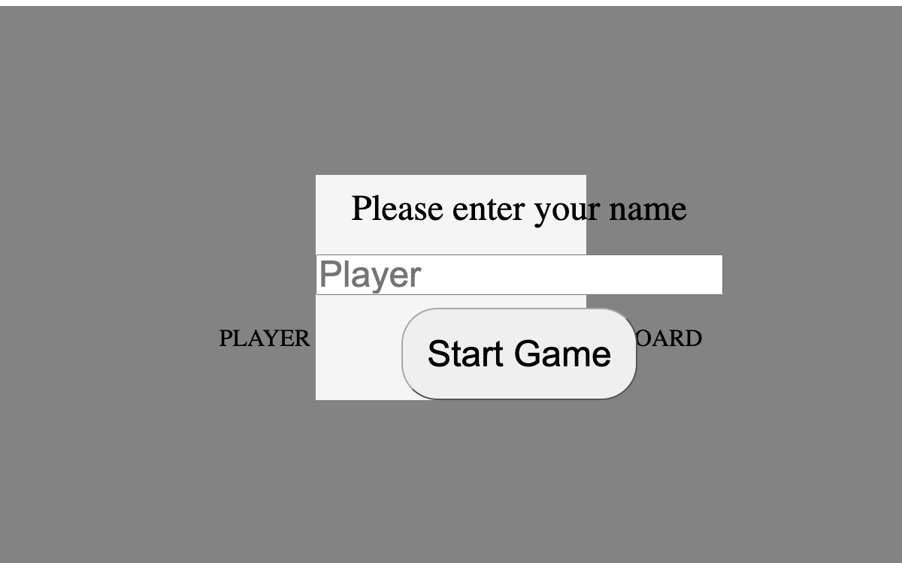
11{ }JavaScript
exercisesONE SMALL PROBLEM AT A TIME
12exercisesONE SMALL PROBLEM AT A TIME
Practice
JavaScript exercises
Practice, repeat, understand
A collection of curriculum exercises covering strings, arrays, numbers, and problem solving, with Jest tests.
Exercises & testsView code
WHY KEEP AN ARCHIVE?
A little perspective
on the progress.
I wanted to keep these early projects together rather than lose the small steps that made up the journey. Some are simple pages; others are experiments with a new language or tool.
The code and its commit history are preserved as they were. This collection is a snapshot of learning through practice, with all the rough edges and discoveries that come with it.
Look through the history